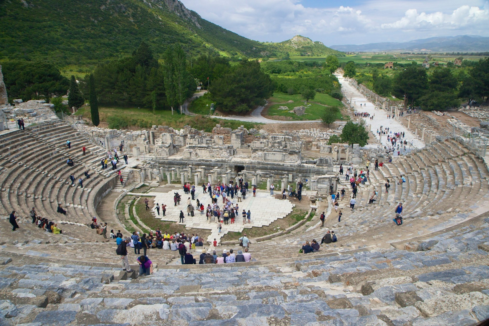
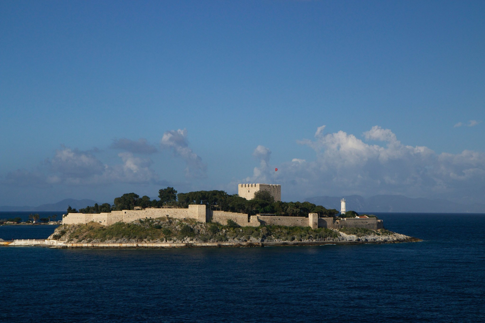
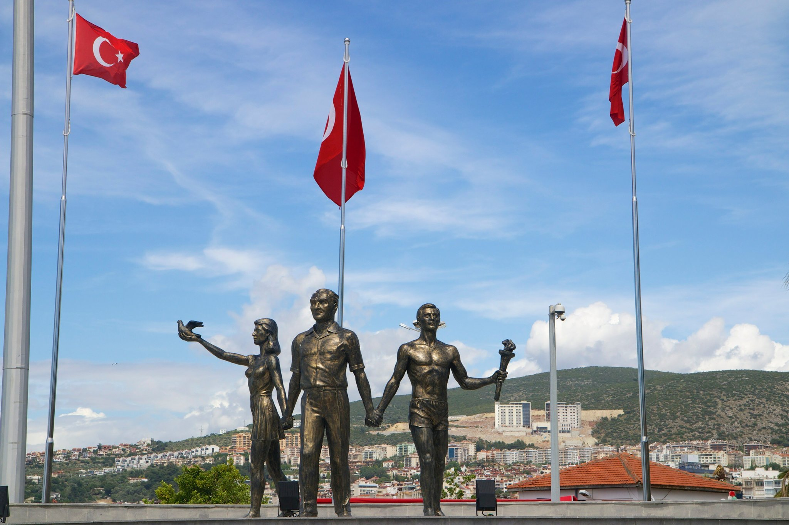
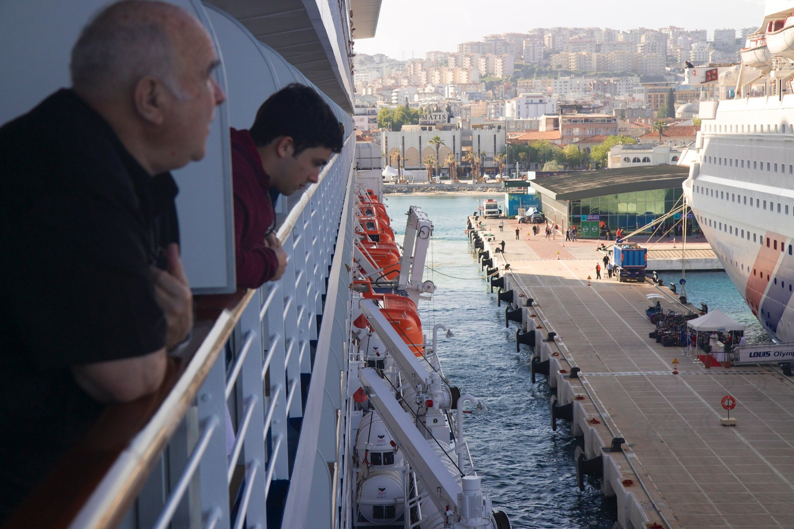

Mark Elster
Historic Reflections 9
The itinerary, day 9

Kusadasi


The authentic paving stones under our feet are polished and worn from countless ancient footfalls—making the sandal–clad ghosts that walked these streets almost palpable. As we make our way down the grade it gradually dawns on us that virtually all the gravel we see around us is the ground–up remains of these ancient priceless ruins. We are indeed fortunate anything is left and indebted to these hapless Turks who have sweated so much over this archeological treasure.
Kasadasi was unsurprisingly the most foreign feeling of our many destinations, so we expected to enjoy it more than we did. The region, indeed, the whole country is a mixmaster of western and eastern ancient history, but most of that isn't apparent in crass little Kusadasi.
The people we meet are friendly, but too often vaguely unpleasant and at turns creepy. Passing through customs onto the wharf we encounter our first phalanx of noisome "merchants" aggressively hawking their wares at the steady stream of tourist "marks" that must weave through them. It confirms the warnings the cruise director offered regarding the many unscrupulous shops and charlatans we were advised to avoid—many selling low quality, pirated or fake goods at exorbitant prices that are always negotiable if you're willing to endure the ritualistic process of haggling them down to a reasonable sum. Unfortunately the knowledge–asymmetry problem in this relationship is grossly not in your favor.
At one point NancyEllen overhears a merchant, who's apparently growing weary of a patron's chit–chat, pointedly say, "Lady, I just want your money!" as a way of getting her to push off.
The people we meet are friendly, but too often vaguely unpleasant and at turns creepy. Passing through customs onto the wharf we encounter our first phalanx of noisome "merchants" aggressively hawking their wares at the steady stream of tourist "marks" that must weave through them. It confirms the warnings the cruise director offered regarding the many unscrupulous shops and charlatans we were advised to avoid—many selling low quality, pirated or fake goods at exorbitant prices that are always negotiable if you're willing to endure the ritualistic process of haggling them down to a reasonable sum. Unfortunately the knowledge–asymmetry problem in this relationship is grossly not in your favor.
At one point NancyEllen overhears a merchant, who's apparently growing weary of a patron's chit–chat, pointedly say, "Lady, I just want your money!" as a way of getting her to push off.


Walking down the main street of marble paving stones, past rank–after–rank of shopfronts along what once was a covered sidewalk (known to the Greeks as a stoa) we pass the public bath and a feature kind of startling to our modern psyche—public toilets lined up for people to sit shoulder to shoulder (and in one unfortunate case in the corner, knocking knees together). What may seem appalling to us is an indication of sophisticated urban planning for public health—each hole strategically perched above a moving stream of water that would've continuously flushed the waste away to the sea.
At the base of the long sweep of the stoa stood the partially restored Library of Ephesus, at one time one of the three most prominent and important libraries in the world—on a par with Alexandria. The Turks had re-erected many of the toppled stones of the main façade and interior walls of the five–story structure (with one underground). Still visible on some of the walls were the carved inscriptions celebrating Greek knowledge and history. Also preserved was the underground connecting tunnel to the brothel we'd just past up the street. Our guide shared that it seems the prominent men of the city would gather in the evening at the library on the pretext of an important meeting with the other gentlemen in town—ostensibly to discuss politics or some philosophical debate—but in reality descend to the tunnel and secretly access the brothel for an illicit unsanctioned liaison—the wife at home no doubt relieved that public appearances were maintained.
At the base of the long sweep of the stoa stood the partially restored Library of Ephesus, at one time one of the three most prominent and important libraries in the world—on a par with Alexandria. The Turks had re-erected many of the toppled stones of the main façade and interior walls of the five–story structure (with one underground). Still visible on some of the walls were the carved inscriptions celebrating Greek knowledge and history. Also preserved was the underground connecting tunnel to the brothel we'd just past up the street. Our guide shared that it seems the prominent men of the city would gather in the evening at the library on the pretext of an important meeting with the other gentlemen in town—ostensibly to discuss politics or some philosophical debate—but in reality descend to the tunnel and secretly access the brothel for an illicit unsanctioned liaison—the wife at home no doubt relieved that public appearances were maintained.


Ephesus


Although impressive, particularly for the knowledge it represents, the library is justifiably not revered for its beauty. Although the craftsmanship is superlative, it did not achieve classical Greek ideals of proportion and order—really rather a hodge podge.
The archetypal amphitheater is immense, suggesting a formidable population in the metropolitan area that belies our concepts of ancient civilizations. Again, the obvious liberties taken with commingled reproductions and authentic original stones may trouble the astute purist, but modern tourists clearly benefit from the effort to recreate what this immense edifice must have been like when it still functioned. It definitely challenges our assumptions about how modern and advanced we are today. For me, it was a treat to see a site that I'd thoroughly studied whilst in architecture school.
The archetypal amphitheater is immense, suggesting a formidable population in the metropolitan area that belies our concepts of ancient civilizations. Again, the obvious liberties taken with commingled reproductions and authentic original stones may trouble the astute purist, but modern tourists clearly benefit from the effort to recreate what this immense edifice must have been like when it still functioned. It definitely challenges our assumptions about how modern and advanced we are today. For me, it was a treat to see a site that I'd thoroughly studied whilst in architecture school.
The morning of day nine we awake at sea with land finally visible on the horizon as we approach the Turkish coastline and ease into the port of Kusadasi past a Medieval fort guarding the harbor.


We made the obligatory stop at the rug merchants, who put on quite a show, followed by a hard sell that was difficult to escape, and then moved on to another sort of monger—proudly displaying their illicit wares under neon signs blaring,"GENUINE FAKE WATCHES." Christoff was on a mission, and wouldn't surrender until he had the right fake—designed to impress.





Exiting the official outdoor museum and archeological site, contrived in the manner of all museums so we must pass through the 'gift shop'—we are confronted by a gauntlet of hastily assembled rickety outdoor stalls tended by aggressive merchants hawking their tchotchke junk on our way to the bus pick–up.
Needing some relief, NancyEllen experienced an unexpected illustration of this in–your–face commercialism. Confronted by a long line, she soon realized a gypsy woman was guarding the entrance to the park's public restrooms, like some kind of troll, demanding payment to determine who got in next! We experienced one final obstacle, just before the busses, where Gavin snapped a picture of a camel, only to learn that he was expected to pay for the privilege! Luckily the gypsy pair running the camel operation were preoccupied shaking down another tourist so we could escape unmolested, grateful to be back on the bus. This vaguely reminds me of how we felt years ago when we went to Mt. Rushmore, passing through a wilderness despoiled by out–of–place billboards hawking tourist shop junk that we shouldn't miss. A similarly unfortunate juxtaposition, but more colorful and entertaining in this context.
Needing some relief, NancyEllen experienced an unexpected illustration of this in–your–face commercialism. Confronted by a long line, she soon realized a gypsy woman was guarding the entrance to the park's public restrooms, like some kind of troll, demanding payment to determine who got in next! We experienced one final obstacle, just before the busses, where Gavin snapped a picture of a camel, only to learn that he was expected to pay for the privilege! Luckily the gypsy pair running the camel operation were preoccupied shaking down another tourist so we could escape unmolested, grateful to be back on the bus. This vaguely reminds me of how we felt years ago when we went to Mt. Rushmore, passing through a wilderness despoiled by out–of–place billboards hawking tourist shop junk that we shouldn't miss. A similarly unfortunate juxtaposition, but more colorful and entertaining in this context.


Another stint on a bus, this time with our tour guide Ester (the least compelling of the many great guides we've encountered). The most difficult thing to understand was her assertion that our two hour drive inland along a river delta to the Greek ruins called Ephesus would deposit us in what was originally a seaside port. Judging from the puzzled looks on our fellow traveler's faces, her geologic explanation was incoherent (our own background interest in geology allowed us to penetrate what actually happened—the entire plain we traveled across was a great block that had been up–thrust by the same earthquake activity that destroyed Ephesus, the sea receding behind it).
The Turks had made a somewhat underfunded and amateurish effort at restoration that occasionally resulted in comically ridiculous gravity–defying ruins, but more often allow visitors to imagine what this remarkable quake–tossed city had once been. The sheer scale of the undertaking is awe inspiring.
The Turks in many cases have mixed stones that were never before touching in order to recreate columns and walls in a somewhat authentic version of what once was—in spite of this subterfuge, it is very impressive. We saw nearly all of the important components of a modern city were present right down to the shopping malls (known to the ancient Greeks as agora).
The Turks had made a somewhat underfunded and amateurish effort at restoration that occasionally resulted in comically ridiculous gravity–defying ruins, but more often allow visitors to imagine what this remarkable quake–tossed city had once been. The sheer scale of the undertaking is awe inspiring.
The Turks in many cases have mixed stones that were never before touching in order to recreate columns and walls in a somewhat authentic version of what once was—in spite of this subterfuge, it is very impressive. We saw nearly all of the important components of a modern city were present right down to the shopping malls (known to the ancient Greeks as agora).